Wardrobe & styling · Pre-release mobile product
Mymee
A wardrobe designed around real decisions
Wardrobe organization, outfit editing, and styling suggestions in one experience. People can reuse what they own and decide what to wear, change, or save.
Role Product concept, information architecture, Figma flows, interaction design, and design QA of AI-assisted builds.
See the Mymee outfit editor ↓Organize once. Use it everywhere.
Home gives people a starting point for everyday decisions. Wardrobe items can be found by category, assigned to spaces, and reused across outfit collections.
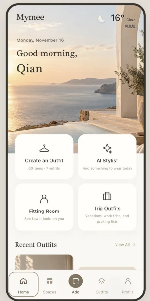
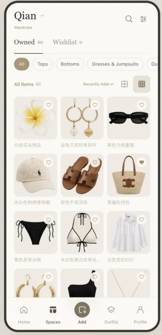
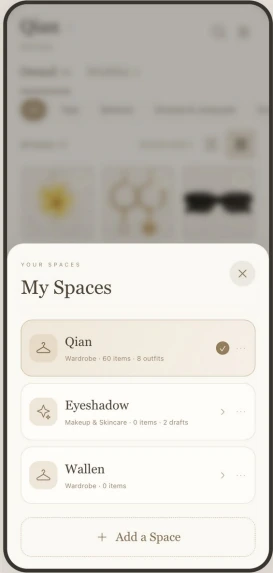
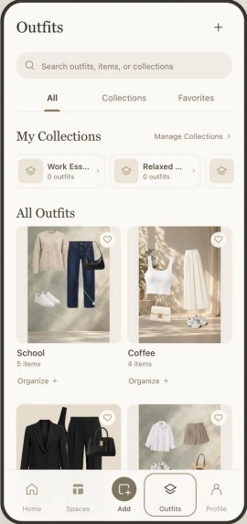
From interaction states to a working canvas
The Figma prototype uses a focused tray to expose resize, replacement, and layer controls. The current app keeps a larger canvas visible while people browse garments, with save and try-on nearby.
This layout trades some control visibility for more room to compose. External usability validation is planned.
Open the original Figma prototype ↗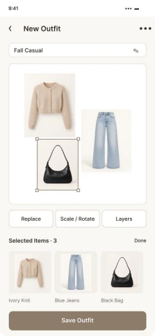

Keep outfits editable and reusable
The canvas stays connected to the wardrobe while people position, scale, layer, and replace pieces. Saved looks can be reopened from the outfits collection.
Ask, compare, and refine
In the app, a conversational assistant suggests looks based on the occasion and the saved wardrobe. People can see the referenced pieces, ask for another suggestion, and edit the result on the canvas.
Whether clear references and easy revision make suggestions more trustworthy still needs user testing. The web demo uses preset looks.
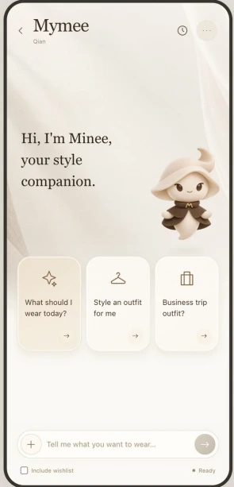
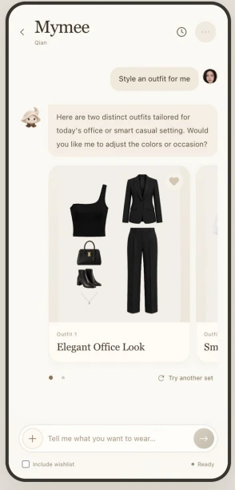
Review inputs, then request a preview
The fitting room puts the person photo, selected garments, background, and optional instructions together for review. Before starting a paid request, a confirmation explains which inputs will be sent.
The result is a style visualization. The app presents it without claiming to determine fit or sizing. The web case study shows the original workflow in screenshots.
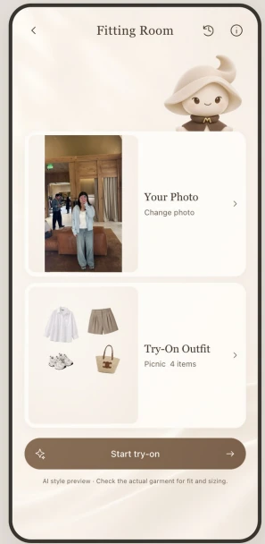
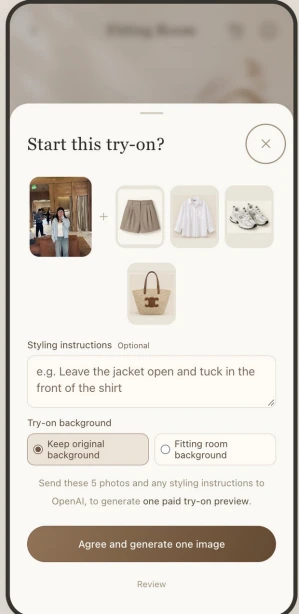
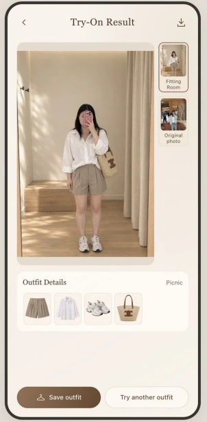
Plan around the itinerary
Activities are grouped by day. Daily Outfits and Packing List live with the itinerary so users can make clothing choices in the context of the trip.
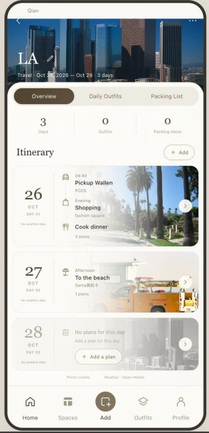
Simplified web demo
Try outfit composition
Start with a sample look or build your own. Drag pieces on the board, or select one to set its position, size, and layer order.
This simplified browser demo focuses on composing an outfit with a sample wardrobe. The original Mymee app screens above show the product interface and its wider workflows.